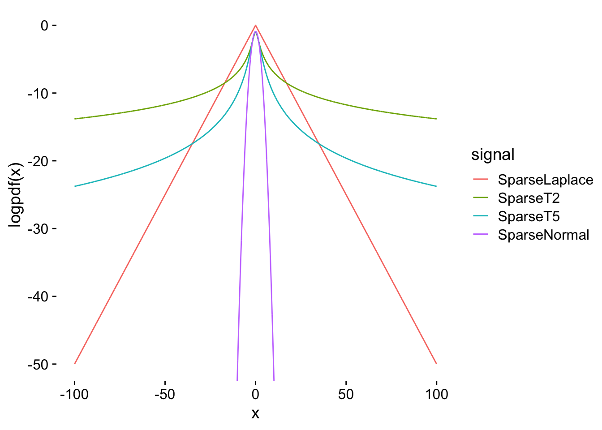
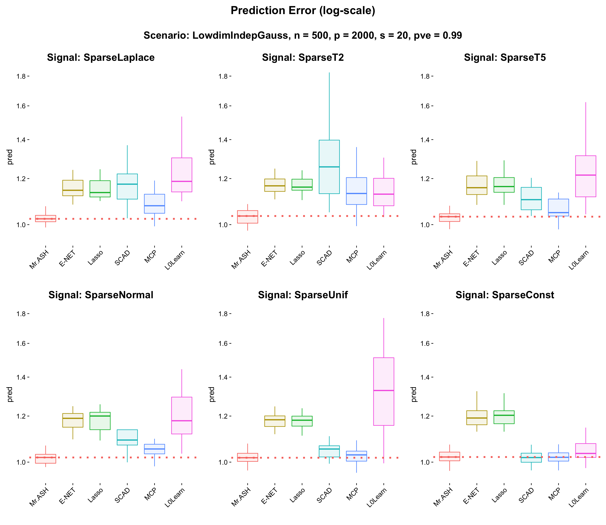
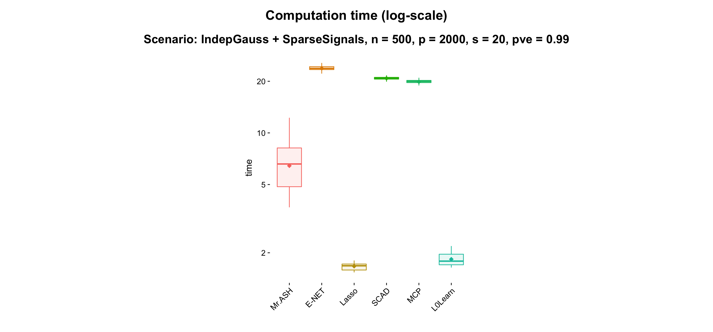

Last updated: 2019-10-14
Checks: 7 0
Knit directory: mr-ash-workflow/
This reproducible R Markdown analysis was created with workflowr (version 1.4.0). The Checks tab describes the reproducibility checks that were applied when the results were created. The Past versions tab lists the development history.
Great! Since the R Markdown file has been committed to the Git repository, you know the exact version of the code that produced these results.
Great job! The global environment was empty. Objects defined in the global environment can affect the analysis in your R Markdown file in unknown ways. For reproduciblity it’s best to always run the code in an empty environment.
The command set.seed(20191007) was run prior to running the code in the R Markdown file. Setting a seed ensures that any results that rely on randomness, e.g. subsampling or permutations, are reproducible.
Great job! Recording the operating system, R version, and package versions is critical for reproducibility.
Nice! There were no cached chunks for this analysis, so you can be confident that you successfully produced the results during this run.
Great job! Using relative paths to the files within your workflowr project makes it easier to run your code on other machines.
Great! You are using Git for version control. Tracking code development and connecting the code version to the results is critical for reproducibility. The version displayed above was the version of the Git repository at the time these results were generated.
Note that you need to be careful to ensure that all relevant files for the analysis have been committed to Git prior to generating the results (you can use wflow_publish or wflow_git_commit). workflowr only checks the R Markdown file, but you know if there are other scripts or data files that it depends on. Below is the status of the Git repository when the results were generated:
Ignored files:
Ignored: .Rhistory
Ignored: .Rproj.user/
Untracked files:
Untracked: .DS_Store
Untracked: .Rapp.history
Untracked: analysis/.DS_Store
Untracked: code/method_wrapper.R
Untracked: code/sim_wrapper.R
Untracked: data/Thyroid.ENSG00000000971.RDS
Untracked: data/Thyroid.ENSG00000004468.RDS
Untracked: data/Thyroid.ENSG00000004777.RDS
Untracked: data/Thyroid.ENSG00000007402.RDS
Untracked: data/Thyroid.ENSG00000008441.RDS
Untracked: data/Thyroid.ENSG00000008869.RDS
Untracked: data/Thyroid.ENSG00000009954.RDS
Untracked: data/Thyroid.ENSG00000010295.RDS
Untracked: data/Thyroid.ENSG00000011638.RDS
Untracked: data/Thyroid.ENSG00000016864.RDS
Untracked: data/Thyroid.ENSG00000018280.RDS
Untracked: data/Thyroid.ENSG00000019169.RDS
Untracked: data/Thyroid.ENSG00000020922.RDS
Untracked: data/Thyroid.ENSG00000026950.RDS
Untracked: data/Thyroid.ENSG00000028839.RDS
Untracked: data/Thyroid.ENSG00000031003.RDS
Untracked: data/Thyroid.ENSG00000031823.RDS
Untracked: data/Thyroid.ENSG00000033030.RDS
Untracked: data/Thyroid.ENSG00000036054.RDS
Untracked: data/Thyroid.ENSG00000044574.RDS
Untracked: docs/.DS_Store
Untracked: docs/figure/Result4_Highdim.Rmd/
Untracked: results/
Note that any generated files, e.g. HTML, png, CSS, etc., are not included in this status report because it is ok for generated content to have uncommitted changes.
These are the previous versions of the R Markdown and HTML files. If you’ve configured a remote Git repository (see ?wflow_git_remote), click on the hyperlinks in the table below to view them.
| File | Version | Author | Date | Message |
|---|---|---|---|---|
| html | bd36a79 | Youngseok | 2019-10-14 | Build site. |
| Rmd | 2368046 | Youngseok | 2019-10-14 | wflow_publish("analysis/*.Rmd") |
This .Rmd file is to plot results for the experiment MR.ASH and the comparison methods listed below.
glmnet R package: Ridge, Lasso, E-NETncvreg R package: SCAD, MCPL0Learn R package: L0LearnBGLR R package: BayesB, Blasso (Bayesian Lasso)susieR R package: SuSiE (Sum of Single Effect)varbvs R package: VarBVS (Variational Bayes Variable Selection)The experiment is based on the following simulation setting.
We use 20 real genotype matrices from GTEx consortium (https://gtexportal.org/home/).
\(n = 287\) and \(p = 5732, 7659, 6857, 4012, 6356, 8683, 4076, 7178, 4847, 5141, 6535, 7537, 7263, 7011, 7468, 5020, 8760, 5995, 6440, 5456\). The number of coefficients \(p\) varies from 4,012 to 8,760. The average size of \(p\) is 6,401.3.
Also, columns of \(X\) are very highly correlated (even some are perfectly correlated).
We will use the following 6 different signal settings with the same sparsity \(s = 20\).
SparseLaplace: \(\beta_j \sim \textrm{Laplace}(1)\) for \(j \in J\) and \(\beta_j = 0\) otherwise, where \(J\) is a set of randomly \(s\) indices in \(\{1,\cdots,p\}\), chosen uniformly at random.
SparseT2: \(\beta_j \sim \textrm{t}_2\) for \(j \in J\) and \(\beta_j = 0\) otherwise, where \(J\) is a set of randomly \(s\) indices in \(\{1,\cdots,p\}\), chosen uniformly at random.
SparseT5: \(\beta_j \sim \textrm{t}_5\) for \(j \in J\) and \(\beta_j = 0\) otherwise, where \(J\) is a set of randomly \(s\) indices in \(\{1,\cdots,p\}\), chosen uniformly at random.
SparseNormal: \(\beta_j \sim N(0,\sigma_\beta^2)\) for \(j \in J\) and \(\beta_j = 0\) otherwise, where \(J\) is a set of randomly \(s\) indices in \(\{1,\cdots,p\}\), chosen uniformly at random.
SparseUniform: \(\beta_j \sim \textrm{Unif}(0,1)\) for \(j \in J\) and \(\beta_j = 0\) otherwise, where \(J\) is a set of randomly \(s\) indices in \(\{1,\cdots,p\}\), chosen uniformly at random.
SparseConstant: \(\beta_j = 1\) for \(j \in J\) and \(\beta_j = 0\) otherwise, where \(J\) is a set of randomly \(s\) indices in \(\{1,\cdots,p\}\), chosen uniformly at random.
The following is the tail behaviors of the above signal generating probability distributions.
library(ggplot2); library(cowplot)
x = seq(-100,100,0.01)
dat = rbind(data.frame(x = x, y = dexp(abs(x), 1, log = TRUE) / 2, signal = "SparseLaplace"),
data.frame(x = x, y = dt(x, df = 2, log = TRUE), signal = "SparseT2"),
data.frame(x = x, y = dt(x, df = 5, log = TRUE), signal = "SparseT5"),
data.frame(x = x, y = dnorm(x, log = TRUE), signal = "SparseNormal"))
ggplot(dat) + geom_line(aes(x = x, y = y, color = signal)) +
coord_cartesian(ylim = c(-50,0)) + theme_cowplot(font_size = 14) +
theme(axis.line = element_blank()) +
labs(x = "x", y = "logpdf(x)")
| Version | Author | Date |
|---|---|---|
| bd36a79 | Youngseok | 2019-10-14 |
Then we sample \(y = X\beta + \epsilon\), where \(\epsilon \sim N(0,\sigma^2 I_n)\).
We fix PVE = 0.99, where PVE is the proportion of variance explained, defined by
\[
{\rm PVE} = \frac{\textrm{Var}(X\beta)}{\textrm{Var}(X\beta) + \sigma^2},
\] where \(\textrm{Var}(a)\) denotes the sample variance of \(a\) calculated using R function var. To this end, we set \(\sigma^2 = \textrm{Var}(X\beta)\).
When PVE is large, then it implies that the signal-to-noise ratio (SNR) is also large. Usually SNR is defined as
\[ {\rm SNR} = \frac{\textrm{Var}(X\beta)}{\sigma^2} = \frac{PVE}{1- PVE} = \frac{1}{(PVE)^{-1} - 1} \] Thus large PVE implies large SNR. When SNR is large, we expect that the cross-validated \(\lambda\) and the VEB estimate \(g\) are both fairly accurate, and thus one can directly compare the flexibility of the shrinkage operator.
The above two figures display the prediction error. The prediction error we define here is
\[ \textrm{Pred.Err}(\hat\beta;y_{\rm test}, X_{\rm test}) = \frac{\textrm{RMSE}}{\sigma} = \frac{\|y_{\rm test} - X_{\rm test} \hat\beta \|}{\sqrt{n}\sigma} \]
where \(y_{\rm test}\) and \(X_{\rm test}\) are test data sample in the same way. If \(\hat\beta\) is fairly accurate, then we expect that \(\rm RMSE\) is similar to \(\sigma\). Therefore in average \(\textrm{Pred.Err} \geq 1\) and the smaller the better.
A list of packages we have loaded is collapsed. Please click “code” to see the list.
library(Matrix); library(ggplot2); library(cowplot); library(susieR); library(BGLR);
library(glmnet); library(varbvs2); library(ncvreg); library(L0Learn); library(varbvs);
standardize = FALSE
source('code/method_wrapper.R')
source('code/sim_wrapper.R')res_df = readRDS("results/signalshape_pve0.99.RDS")
method_list = c("Mr.ASH","VarBVS","BayesB","Blasso","SuSiE","E-NET","Lasso","Ridge","SCAD","MCP","L0Learn")
method_level = c("Mr.ASH","E-NET","Lasso","Ridge",
"SCAD","MCP","L0Learn",
"VarBVS","BayesB","Blasso","SuSiE")
col = gg_color_hue(11)
for (i in 1:6) {
res_df[[i]]$fit = rep(method_list, each = 20)
res_df[[i]]$fit = factor(res_df[[i]]$fit, levels = c("Mr.ASH","E-NET","Lasso","Ridge",
"SCAD","MCP","L0Learn",
"VarBVS","BayesB","Blasso","SuSiE"))
some = c(1,2,3,5,6,7)
res_df[[i]] = res_df[[i]][res_df[[i]]$fit %in% method_level[some],]
}
pp = list()
signal_name = c("SparseLaplace","SparseT2","SparseT5","SparseNormal","SparseUnif","SparseConst")
for (i in 1:6) {
d = res_df[[i]]
pp[[i]] = my.box(d, "fit", "pred", values = col[some]) +
theme(axis.line = element_blank(),
axis.text.x = element_text(angle = 45,hjust = 1),
legend.position = "none") +
geom_hline(yintercept = median(d$pred[d$fit == "Mr.ASH"]), col = col[1],
linetype = "dotted", size = 1.5) +
scale_y_continuous(trans = "log10", breaks = c(1,1.2,1.4,1.6,1.8,2.0)) +
coord_cartesian(ylim = c(0.95,1.8))
subtitle = ggdraw() + draw_label(paste(paste("Signal: ",signal_name[i], sep = ""),"", sep = ""),
fontface = 'bold', size = 18)
pp[[i]] = plot_grid(subtitle, pp[[i]], ncol = 1, rel_heights = c(0.06,0.95))
}
fig_main = plot_grid(pp[[1]],pp[[2]],pp[[3]],pp[[4]],pp[[5]],pp[[6]], nrow = 2, rel_widths = c(0.3,0.3,0.3,0.3))
title = ggdraw() + draw_label("Prediction Error (log-scale)", fontface = 'bold', size = 20)
subtitle = ggdraw() + draw_label("Scenario: LowdimIndepGauss, n = 500, p = 2000, s = 20, pve = 0.99", fontface = 'bold', size = 18)
fig = plot_grid(title,subtitle,fig_main, ncol = 1, rel_heights = c(0.04,0.06,0.95))
fig
| Version | Author | Date |
|---|---|---|
| bd36a79 | Youngseok | 2019-10-14 |
sdat = rbind(res_df[[1]], res_df[[2]], res_df[[3]], res_df[[4]], res_df[[5]], res_df[[6]])
p1 = my.box(res_df[[1]], "fit", "time", values = gg_color_hue(11)[c(1,3,7,6,9,11,2,4,5,8)]) +
theme(axis.line = element_blank(),
axis.text.x = element_text(angle = 45,hjust = 1),
legend.position = "none") +
scale_y_continuous(trans = "log10")
p0 = ggplot() + geom_blank() + theme_cowplot() + theme(axis.line = element_blank())
fig_main = plot_grid(p0,p1,p0, nrow = 1, rel_widths = c(0.6,0.6,0.6))
title = ggdraw() + draw_label("Computation time (log-scale)", fontface = 'bold', size = 20)
subtitle = ggdraw() + draw_label("Scenario: IndepGauss + SparseSignals, n = 500, p = 2000, s = 20, pve = 0.99", fontface = 'bold', size = 18)
fig = plot_grid(title,subtitle,fig_main, ncol = 1, rel_heights = c(0.1,0.06,0.95))
fig
| Version | Author | Date |
|---|---|---|
| bd36a79 | Youngseok | 2019-10-14 |
The source code will be popped up when you click code on the right side.
tdat1 = list()
n = 500
p = 2000
s = 20
signal_list = c("lap","t2","t5","normal","unif","const")
method_list = c("varbvs","bayesb","blasso","susie","enet","lasso","ridge","scad","mcp","l0learn")
method_num = length(method_list) + 1
iter_num = 20
pred = matrix(0, iter_num, method_num); colnames(pred) = c("mr.ash", method_list)
time = matrix(0, iter_num, method_num); colnames(time) = c("mr.ash", method_list)
for (iter in 1:6) {
for (i in 1:20) {
data = simulate_data(n, p, s = s, seed = i, signal = signal_list[iter], pve = 0.99)
for (j in 1:length(method_list)) {
fit.method = get(paste("fit.",method_list[j],sep = ""))
fit = fit.method(data$X, data$y, data$X.test, data$y.test, seed = i)
pred[i,j+1] = fit$rsse / data$sigma / sqrt(n)
time[i,j+1] = fit$t
}
fit = fit.mr.ash(data$X, data$y, data$X.test, data$y.test, seed = i,
sa2 = (2^((0:19) / 5 / sqrt(2)^(iter-1)) - 1)^2)
pred[i,1] = fit$rsse / data$sigma / sqrt(n)
time[i,1] = fit$t
}
}
tdat1[[iter]] = data.frame(pred = c(pred), time = c(time), fit = rep(c("mr.ash", method_list), each = 20))Click the below Session Info.
sessionInfo()R version 3.5.3 (2019-03-11)
Platform: x86_64-apple-darwin15.6.0 (64-bit)
Running under: macOS Mojave 10.14
Matrix products: default
BLAS: /Library/Frameworks/R.framework/Versions/3.5/Resources/lib/libRblas.0.dylib
LAPACK: /Library/Frameworks/R.framework/Versions/3.5/Resources/lib/libRlapack.dylib
locale:
[1] en_US.UTF-8/en_US.UTF-8/en_US.UTF-8/C/en_US.UTF-8/en_US.UTF-8
attached base packages:
[1] stats graphics grDevices utils datasets methods base
other attached packages:
[1] varbvs_2.5-16 L0Learn_1.2.0 ncvreg_3.11-1 varbvs2_0.1-1 glmnet_2.0-18
[6] foreach_1.4.7 BGLR_1.0.8 susieR_0.8.0 Matrix_1.2-17 cowplot_1.0.0
[11] ggplot2_3.2.1
loaded via a namespace (and not attached):
[1] Rcpp_1.0.2 RColorBrewer_1.1-2 plyr_1.8.4
[4] compiler_3.5.3 pillar_1.4.2 git2r_0.26.1
[7] workflowr_1.4.0 iterators_1.0.12 tools_3.5.3
[10] digest_0.6.21 evaluate_0.14 tibble_2.1.3
[13] gtable_0.3.0 lattice_0.20-38 pkgconfig_2.0.3
[16] rlang_0.4.0 yaml_2.2.0 xfun_0.9
[19] withr_2.1.2 stringr_1.4.0 dplyr_0.8.3
[22] knitr_1.25 fs_1.3.1 rprojroot_1.3-2
[25] grid_3.5.3 tidyselect_0.2.5 glue_1.3.1
[28] R6_2.4.0 rmarkdown_1.15 latticeExtra_0.6-28
[31] reshape2_1.4.3 purrr_0.3.2 magrittr_1.5
[34] whisker_0.4 codetools_0.2-16 backports_1.1.4
[37] scales_1.0.0 htmltools_0.3.6 assertthat_0.2.1
[40] colorspace_1.4-1 labeling_0.3 nor1mix_1.3-0
[43] stringi_1.4.3 lazyeval_0.2.2 munsell_0.5.0
[46] truncnorm_1.0-8 crayon_1.3.4